library(fpp3)
library(tidyverse)
library(janitor)
library(future)
library(hrbrthemes)
library(GSODR)
library(tictoc)
theme_set(theme_ipsum())
plan(multisession)
options(scipen = 999, digits = 4)Intro
In this post I will extend the modelling approach from the previous post with exogenous variables (variables not directly about the quantity being measured in the time series). These time series models will take into account the time series dynamics of the historical data and any relationship between pothole reports and weather. As I noted in the previous post, you can imagine a “physics” model of pothole creation driven by precipitation and the freeze/thaw cycle. These models will attempt to capture some of that process.
Set up packages and environment
This code reads in the pothole data used in the previous post, aggregates it by year + month, and turns it into a tsibble.
#read in pothole data
pothole_data <- read_csv("post_data/wprdc_311.csv") |>
clean_names() |>
filter(request_type == "Potholes") |>
mutate(created_yearmonth = yearmonth(created_on))
pothole_df <- pothole_data |>
group_by(created_yearmonth, request_type) |>
summarize(report_count = n()) |>
ungroup() |>
as_tsibble()
pothole_df# A tsibble: 93 x 3 [1M]
created_yearmonth request_type report_count
<mth> <chr> <int>
1 2015 Apr Potholes 906
2 2015 May Potholes 1493
3 2015 Jun Potholes 1236
4 2015 Jul Potholes 1288
5 2015 Aug Potholes 734
6 2015 Sep Potholes 526
7 2015 Oct Potholes 516
8 2015 Nov Potholes 890
9 2015 Dec Potholes 309
10 2016 Jan Potholes 222
# ℹ 83 more rowsWeather data
This uses the {GSODR} package to get daily weather data from the USA National Centers for Environmental Information (‘NCEI’). Temperature is in Celsius and precipitation is in millimeters.
load(system.file("extdata", "isd_history.rda", package = "GSODR"))
weather_raw <- get_GSOD(years = c(2014:2023), station = "725205-14762") |>
as_tibble() |>
clean_names()
weather_data <- weather_raw |>
select(stnid, name, date = yearmoda, min, temp, max, prcp)glimpse(weather_data)Rows: 3,601
Columns: 7
$ stnid <chr> "725205-14762", "725205-14762", "725205-14762", "725205-14762", …
$ name <chr> "ALLEGHENY COUNTY AIRPORT", "ALLEGHENY COUNTY AIRPORT", "ALLEGHE…
$ date <date> 2014-01-01, 2014-01-02, 2014-01-03, 2014-01-04, 2014-01-05, 201…
$ min <dbl> -5.0, -6.1, -13.9, -13.9, -2.8, -18.3, -22.8, -22.8, -6.0, -6.1,…
$ temp <dbl> -1.7, -2.1, -10.7, -6.6, 2.6, -2.1, -19.9, -11.8, -3.3, 3.4, 9.8…
$ max <dbl> 3.3, 3.3, -0.6, 3.9, 8.9, 10.6, -16.0, -4.4, 1.1, 8.9, 13.0, 12.…
$ prcp <dbl> 0.00, 0.00, 3.56, 0.00, 0.00, 7.37, 6.86, 0.00, 0.00, 0.25, 0.00…Next I summarize the data by year + month and calculate various lags for each variable.
weather_data <- weather_data |>
mutate(date_ym = yearmonth(date)) |>
group_by(date_ym) |>
summarize(temp_min_avg = mean(min),
temp_avg = mean(temp),
temp_max_avg = mean(max),
prcp_sum = sum(prcp, na.rm = TRUE)) |> #2023-07-30 is missing prcp
ungroup() |>
mutate(temp_diff = temp_max_avg - temp_min_avg) |>
mutate(across(c(temp_min_avg, temp_avg, temp_max_avg, temp_diff, prcp_sum), ~lag(.x, 1), .names = "{.col}_lag1")) |>
mutate(across(c(temp_min_avg, temp_avg, temp_max_avg, temp_diff, prcp_sum), ~lag(.x, 2), .names = "{.col}_lag2")) |>
mutate(across(c(temp_min_avg, temp_avg, temp_max_avg, temp_diff, prcp_sum), ~lag(.x, 3), .names = "{.col}_lag3")) |>
select(date_ym, contains("temp_avg"), contains("min"), contains("max"), contains("diff"), contains("prcp"))
glimpse(weather_data)Rows: 119
Columns: 21
$ date_ym <mth> 2014 Jan, 2014 Feb, 2014 Mar, 2014 Apr, 2014 May, 20…
$ temp_avg <dbl> -4.668, -2.504, 2.194, 12.100, 17.574, 22.097, 21.69…
$ temp_avg_lag1 <dbl> NA, -4.668, -2.504, 2.194, 12.100, 17.574, 22.097, 2…
$ temp_avg_lag2 <dbl> NA, NA, -4.668, -2.504, 2.194, 12.100, 17.574, 22.09…
$ temp_avg_lag3 <dbl> NA, NA, NA, -4.668, -2.504, 2.194, 12.100, 17.574, 2…
$ temp_min_avg <dbl> -10.2935, -6.8643, -4.5258, 5.3300, 11.0806, 16.4833…
$ temp_min_avg_lag1 <dbl> NA, -10.2935, -6.8643, -4.5258, 5.3300, 11.0806, 16.…
$ temp_min_avg_lag2 <dbl> NA, NA, -10.2935, -6.8643, -4.5258, 5.3300, 11.0806,…
$ temp_min_avg_lag3 <dbl> NA, NA, NA, -10.2935, -6.8643, -4.5258, 5.3300, 11.0…
$ temp_max_avg <dbl> 1.7903, 2.9250, 9.9032, 19.9033, 24.2419, 28.2500, 2…
$ temp_max_avg_lag1 <dbl> NA, 1.7903, 2.9250, 9.9032, 19.9033, 24.2419, 28.250…
$ temp_max_avg_lag2 <dbl> NA, NA, 1.7903, 2.9250, 9.9032, 19.9033, 24.2419, 28…
$ temp_max_avg_lag3 <dbl> NA, NA, NA, 1.7903, 2.9250, 9.9032, 19.9033, 24.2419…
$ temp_diff <dbl> 12.084, 9.789, 14.429, 14.573, 13.161, 11.767, 11.59…
$ temp_diff_lag1 <dbl> NA, 12.084, 9.789, 14.429, 14.573, 13.161, 11.767, 1…
$ temp_diff_lag2 <dbl> NA, NA, 12.084, 9.789, 14.429, 14.573, 13.161, 11.76…
$ temp_diff_lag3 <dbl> NA, NA, NA, 12.084, 9.789, 14.429, 14.573, 13.161, 1…
$ prcp_sum <dbl> 47.25, 58.41, 56.13, 91.42, 149.08, 120.39, 83.81, 1…
$ prcp_sum_lag1 <dbl> NA, 47.25, 58.41, 56.13, 91.42, 149.08, 120.39, 83.8…
$ prcp_sum_lag2 <dbl> NA, NA, 47.25, 58.41, 56.13, 91.42, 149.08, 120.39, …
$ prcp_sum_lag3 <dbl> NA, NA, NA, 47.25, 58.41, 56.13, 91.42, 149.08, 120.…Explore weather data
This shows average temperature, average minimum temperature, and average maximum temperature in Pittsburgh by year + month.
weather_data |>
ggplot(aes(date_ym, temp_avg)) +
geom_ribbon(aes(ymin = temp_min_avg, ymax = temp_max_avg), alpha = .3) +
geom_line()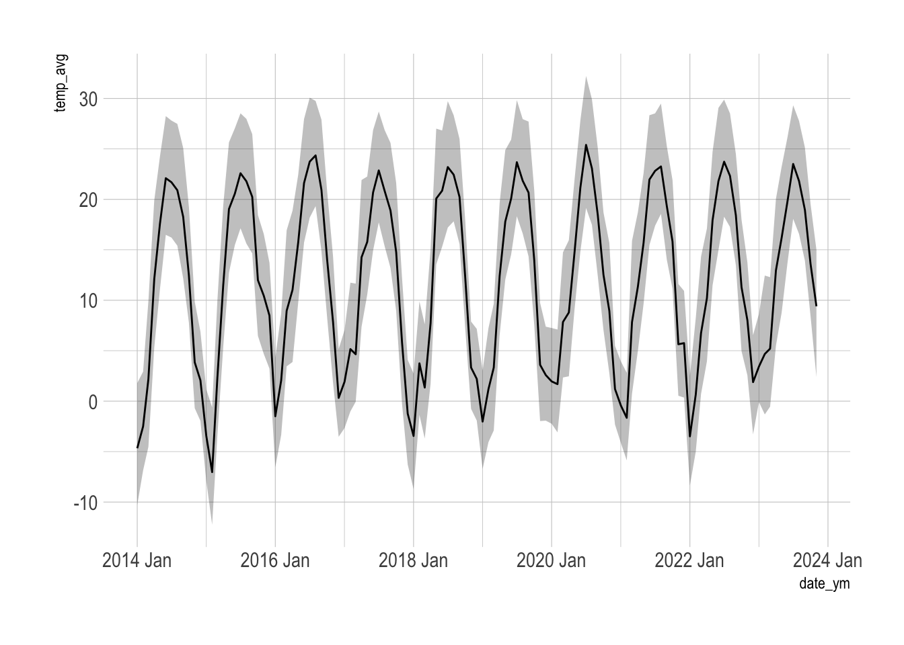
This shows the sum of precipitation by year + month over time.
weather_data |>
ggplot(aes(date_ym, prcp_sum)) +
geom_line()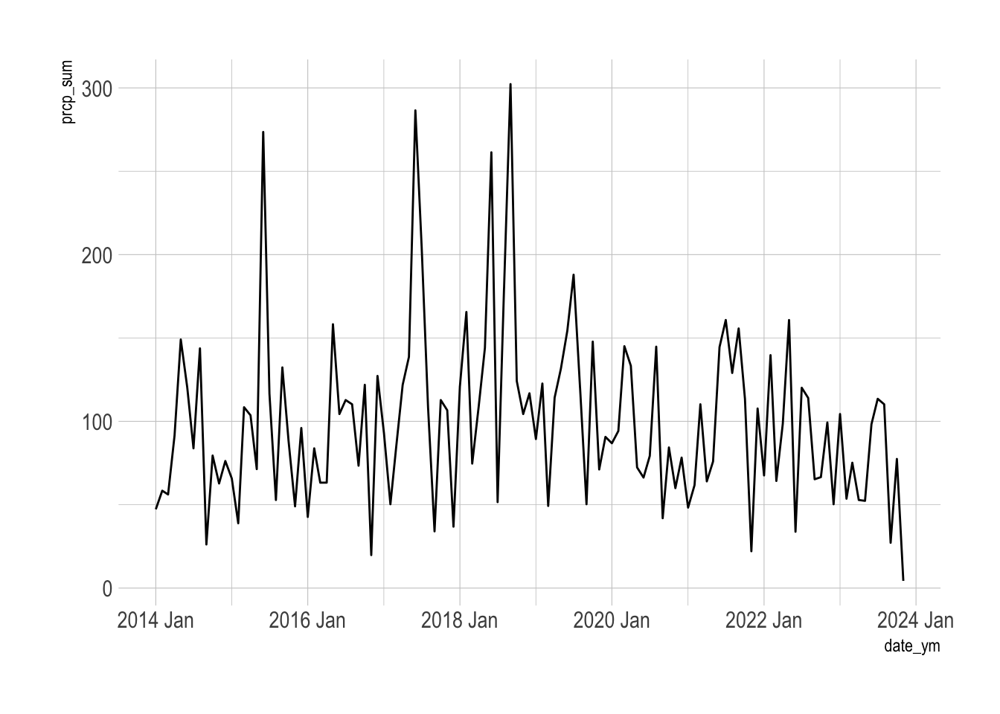
This compares precipitation vs the minimum temperature (below freezing highlighted).
weather_data |>
mutate(year = as.factor(year(date_ym))) |>
ggplot(aes(temp_min_avg, prcp_sum)) +
geom_rect(aes(xmin = -Inf, xmax = 0, ymin = -Inf, ymax = Inf), color = "grey", alpha = .1) +
geom_point(aes(color = year)) +
geom_vline(xintercept = 0) +
facet_wrap(vars(year)) +
guides(color = "none")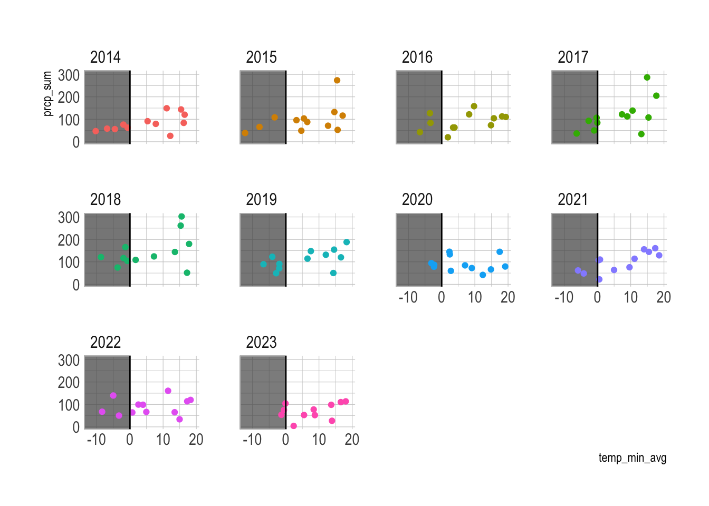
2017 and 2018 appear to have slightly more precipitation in below freezing temperatures, but not significantly.
Compare weather data and pothole reports
Next I do some EDA to visualize any connection between reports of potholes in the “current” month and weather.
pothole_df <- pothole_df |>
left_join(weather_data, by = c("created_yearmonth" = "date_ym"))pothole_df |>
as_tibble() |>
select(report_count, contains("temp_avg")) |>
pivot_longer(contains("temp")) |>
ggplot(aes(value, report_count)) +
geom_point() +
geom_smooth(method = "lm") +
facet_wrap(vars(name), scales = "free") +
labs(title = "Pothole reports vs. the average temperature")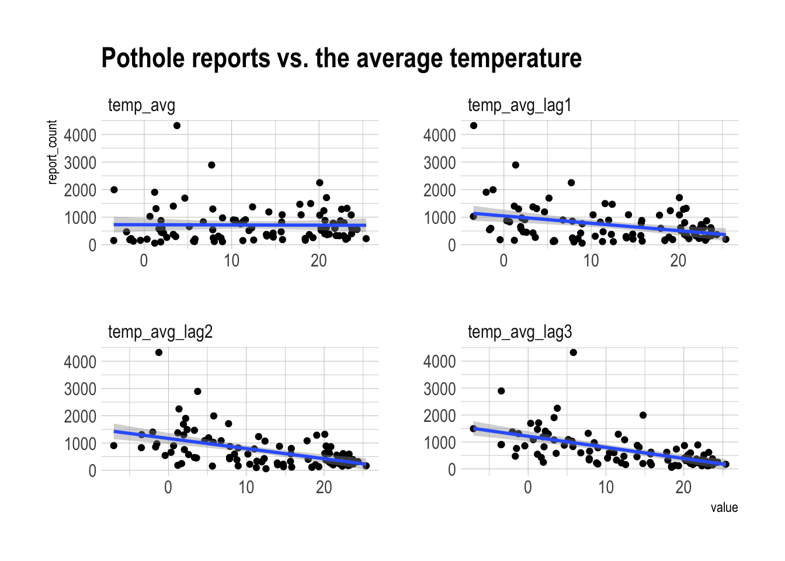
There is some positive relationship between lower average temperatures in previous months and pothole reports. The “current” average temperature does not appear to be related.
pothole_df |>
as_tibble() |>
select(report_count, contains("temp_diff")) |>
pivot_longer(contains("temp")) |>
ggplot(aes(value, report_count)) +
geom_point() +
geom_smooth(method = "lm") +
facet_wrap(vars(name), scales = "free") +
labs(title = "Pothole reports vs. the temperature difference")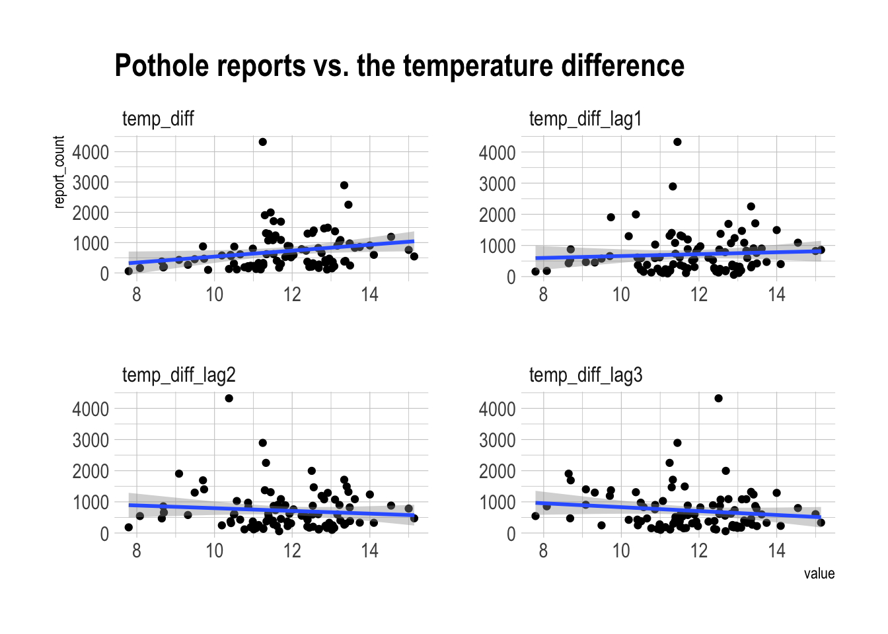
There is a weakly positive relationship between temperature difference in the current month and pothole reports. Longer lags develop a negative relationship.
pothole_df |>
as_tibble() |>
select(report_count, contains("min")) |>
pivot_longer(contains("min")) |>
ggplot(aes(value, report_count)) +
geom_point() +
geom_smooth(method = "lm") +
facet_wrap(vars(name), scales = "free") +
labs(title = "Pothole reports vs. the minimum temperature")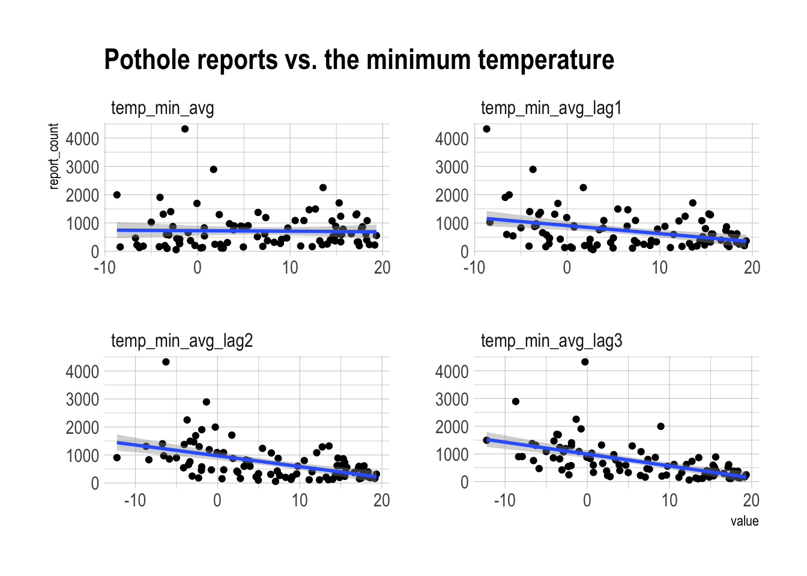
There appears to be a positive relationship between lower minimum temperature in previous months and pothole reports.
pothole_df |>
as_tibble() |>
select(report_count, contains("max")) |>
pivot_longer(contains("max")) |>
ggplot(aes(value, report_count)) +
geom_point() +
geom_smooth(method = "lm") +
facet_wrap(vars(name), scales = "free") +
labs(title = "Pothole reports vs. the maximum temperature")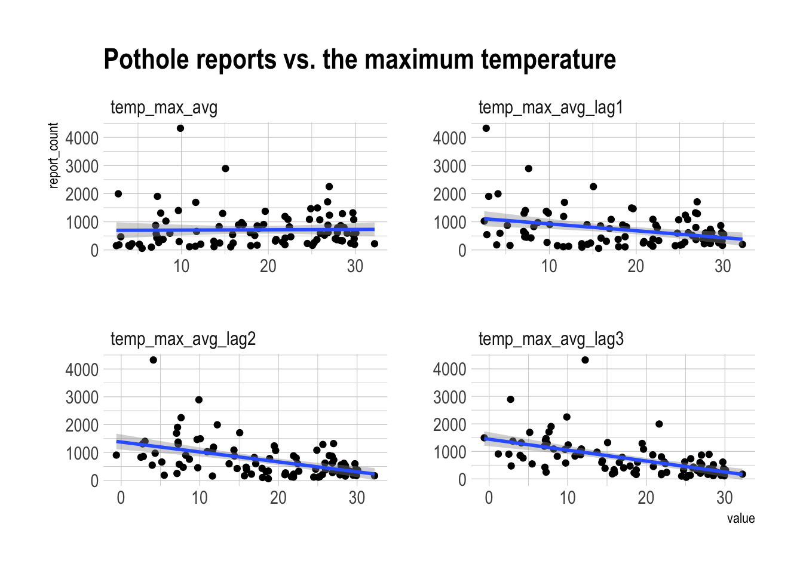
There is some positive relationship between lower maximum temperature in previous months and pothole reports.
pothole_df |>
as_tibble() |>
select(report_count, contains("prcp")) |>
pivot_longer(contains("prcp")) |>
ggplot(aes(value, report_count)) +
geom_point() +
geom_smooth(method = "lm") +
facet_wrap(vars(name), scales = "free") +
labs(title = "Pothole reports vs. precipitation")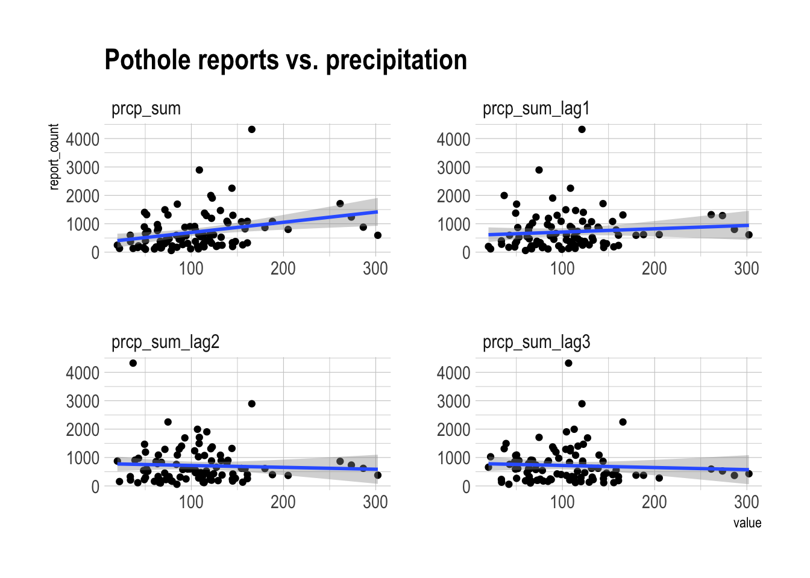
There is a positive relationship between the total precipitation in the current month and pothole reports.
Cross-validate models
Next I cross-validate models using various combinations of the weather data as exogenous variables. I also make benchmark models for comparison.
#cv
pothole_cv <- stretch_tsibble(pothole_df, .step = 1, .init = 24)
pothole_cv |>
count(.id)# A tibble: 70 × 2
.id n
<int> <int>
1 1 24
2 2 25
3 3 26
4 4 27
5 5 28
6 6 29
7 7 30
8 8 31
9 9 32
10 10 33
# ℹ 60 more rowsAs in the previous post, report_count is transformed with log(x + 1) to force the predictions to be positive.
tic()
progressr::with_progress(
model_df_exo <- pothole_cv |>
model(ets = ETS(log(report_count + 1)),
ts_lm = TSLM(log(report_count + 1) ~ trend() + season()),
ts_lm_exo = TSLM(log(report_count + 1) ~ trend() + season() + temp_avg + temp_min_avg + temp_max_avg + prcp_sum),
ts_lm_exo_lag1 = TSLM(log(report_count + 1) ~ trend() + season() + temp_avg_lag1 + temp_min_avg_lag1 + temp_max_avg_lag1 + prcp_sum_lag1),
ts_lm_exo_lag2 = TSLM(log(report_count + 1) ~ trend() + season() + temp_avg_lag2 + temp_min_avg_lag2 + temp_max_avg_lag2 + prcp_sum_lag2),
ts_lm_exo_lag3 = TSLM(log(report_count + 1) ~ trend() + season() + temp_avg_lag3 + temp_min_avg_lag3 + temp_max_avg_lag3 + prcp_sum_lag3),
ts_lm_exo_custom = TSLM(log(report_count + 1) ~ trend() + season() + temp_avg_lag3 + temp_diff + temp_min_avg_lag3 + temp_max_avg_lag1 + prcp_sum),
arima = ARIMA(log(report_count + 1)),
arima_exo = ARIMA(log(report_count + 1) ~ temp_avg + temp_min_avg + temp_max_avg + prcp_sum),
arima_exo_lag1 = ARIMA(log(report_count + 1) ~ temp_avg_lag1 + temp_min_avg_lag1 + temp_max_avg_lag1 + prcp_sum_lag1),
arima_exo_lag2 = ARIMA(log(report_count + 1) ~ temp_avg_lag2 + temp_min_avg_lag2 + temp_max_avg_lag2 + prcp_sum_lag2),
arima_exo_lag3 = ARIMA(log(report_count + 1) ~ temp_avg_lag3 + temp_min_avg_lag3 + temp_max_avg_lag3 + prcp_sum_lag3),
arima_exo_custom = ARIMA(log(report_count + 1) ~ temp_avg_lag3 + temp_diff + temp_min_avg_lag3 + temp_max_avg_lag1 + prcp_sum)
)
)
toc()376.773 sec elapsedThe “exo_custom” models represent a naive guess at what combinations of weather variables are most related, based on the previous graphs. A more methodological meteorological approach would probably be much better.
I use new_data to generate 12 new future observations for each CV .id and make a forecast for each .id and .model.
horizon_data <- new_data(pothole_cv, 12) |>
left_join(pothole_df)
horizon_data# A tsibble: 840 x 24 [1M]
# Key: .id [70]
created_yearmonth .id request_type report_count temp_avg temp_avg_lag1
<mth> <int> <chr> <int> <dbl> <dbl>
1 2017 Apr 1 Potholes 1191 14.3 4.65
2 2017 May 1 Potholes 1088 15.8 14.3
3 2017 Jun 1 Potholes 880 20.7 15.8
4 2017 Jul 1 Potholes 801 22.9 20.7
5 2017 Aug 1 Potholes 620 20.8 22.9
6 2017 Sep 1 Potholes 369 18.9 20.8
7 2017 Oct 1 Potholes 278 14.8 18.9
8 2017 Nov 1 Potholes 207 5.82 14.8
9 2017 Dec 1 Potholes 131 -1.24 5.82
10 2018 Jan 1 Potholes 1995 -3.45 -1.24
# ℹ 830 more rows
# ℹ 18 more variables: temp_avg_lag2 <dbl>, temp_avg_lag3 <dbl>,
# temp_min_avg <dbl>, temp_min_avg_lag1 <dbl>, temp_min_avg_lag2 <dbl>,
# temp_min_avg_lag3 <dbl>, temp_max_avg <dbl>, temp_max_avg_lag1 <dbl>,
# temp_max_avg_lag2 <dbl>, temp_max_avg_lag3 <dbl>, temp_diff <dbl>,
# temp_diff_lag1 <dbl>, temp_diff_lag2 <dbl>, temp_diff_lag3 <dbl>,
# prcp_sum <dbl>, prcp_sum_lag1 <dbl>, prcp_sum_lag2 <dbl>, …pothole_fc_exo <- model_df_exo |>
forecast(horizon_data)Compare accuracy
This code calculates the out of sample accuracy for each .id and .model, and then averages the accuracy by .model.
tic()
fc_exo_acc <- pothole_fc_exo |>
accuracy(pothole_df, measures = list(point_accuracy_measures, distribution_accuracy_measures, skill_crps = skill_score(CRPS))) |>
select(.model, .type, RMSE, skill_crps) |>
arrange(desc(skill_crps))
toc()7108.297 sec elapsedfc_exo_acc# A tibble: 13 × 4
.model .type RMSE skill_crps
<chr> <chr> <dbl> <dbl>
1 arima_exo_custom Test 610. 0.743
2 arima_exo_lag3 Test 596. 0.741
3 ts_lm_exo_custom Test 658. 0.728
4 arima_exo_lag2 Test 658. 0.710
5 arima_exo_lag1 Test 660. 0.707
6 ts_lm_exo_lag3 Test 711. 0.699
7 arima_exo Test 713. 0.696
8 ts_lm_exo_lag1 Test 758. 0.696
9 ts_lm Test 780. 0.672
10 ts_lm_exo_lag2 Test 875. 0.669
11 ts_lm_exo Test 793. 0.669
12 ets Test 1901. 0.540
13 arima Test 1843. 0.516My arima_exo_custom model slightly improves on the arima_exo_lag3 model.
Excluding the worst two models:
fc_exo_acc |>
filter(!.model %in% c("ets", "arima")) |>
ggplot(aes(RMSE, skill_crps, label = .model)) +
geom_point() +
ggrepel::geom_label_repel(max.overlaps = 100) +
scale_x_reverse()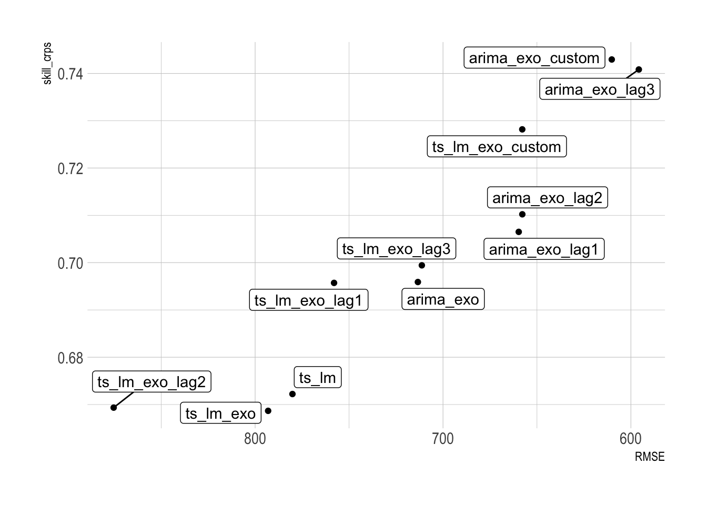
Scenario forecasting
This code simulates high and low scenarios of precipitation. I use these to create scenario forecasts based on varying levels of future precipitation and the temperature data. Then I forecast each scenario with the arima_exo_custom model.
#extracts the 10%, 50%, and 90% percentiles of precipitation by month
prcp_percentiles <- pothole_df |>
mutate(month = month(created_yearmonth, label = TRUE)) |>
as_tibble() |>
select(month, prcp_sum) |>
group_by(month) |>
reframe(pctiles = c("10", "50", "90"),
prcp_sum = quantile(prcp_sum, probs = c(.1, .5, .9))) |>
ungroup() |>
pivot_wider(names_from = pctiles, values_from = prcp_sum, names_prefix = "prcp_sum_")
prcp_percentiles# A tibble: 12 × 4
month prcp_sum_10 prcp_sum_50 prcp_sum_90
<ord> <dbl> <dbl> <dbl>
1 Jan 46.0 86.8 104.
2 Feb 57.1 94.2 150.
3 Mar 57.6 74.7 124.
4 Apr 63.8 106. 125.
5 May 72.1 135. 159.
6 Jun 56.5 149. 277.
7 Jul 70.9 118. 193.
8 Aug 91.4 117. 155.
9 Sep 39.5 69.3 200.
10 Oct 79 113. 131.
11 Nov 21.4 65.5 105.
12 Dec 46.2 93.3 120.create_horizon_data <- function(x, prcp_scenario, prcp_col){
#drop the lagged weather variables from the input df containing historical weather data
x <- x |>
select(-contains("lag"))
#create a new dataframe with the next 12 future observations
new_df <- new_data(x, 12) |>
mutate(request_type = "Potholes")
#find the monthly average for all the temperature variables
new_temp_data <- x |>
mutate(month = month(created_yearmonth, label = TRUE)) |>
as_tibble() |>
select(-contains(c("lag", "prcp"))) |>
group_by(month) |>
summarize(across(where(is.numeric), mean)) |>
ungroup() |>
#add in percentile precipitation column
left_join(prcp_scenario |>
select(month, {{ prcp_col }})) |>
rename(prcp_sum = {{ prcp_col }})
#join new temperature data
new_df <- new_df |>
mutate(month = month(created_yearmonth, label = TRUE)) |>
left_join(new_temp_data)
#append new temperature data to historical data
x <- x |>
bind_rows(new_df)
#recalculate the lagged weather data based on the given percentile of precipitation
x |>
mutate(across(c(temp_min_avg, temp_avg, temp_max_avg, temp_diff, prcp_sum), ~lag(.x, 1), .names = "{.col}_lag1")) |>
mutate(across(c(temp_min_avg, temp_avg, temp_max_avg, temp_diff, prcp_sum), ~lag(.x, 2), .names = "{.col}_lag2")) |>
mutate(across(c(temp_min_avg, temp_avg, temp_max_avg, temp_diff, prcp_sum), ~lag(.x, 3), .names = "{.col}_lag3")) |>
semi_join(new_df, by = c("created_yearmonth")) |>
select(created_yearmonth, request_type, report_count, contains("temp_avg"), contains("min"), contains("max"), contains("diff"), contains("prcp"))
}This shows the future scenario with 10th percentile precipitation in each month:
create_horizon_data(pothole_df, prcp_percentiles, prcp_sum_10) |>
glimpse()Rows: 12
Columns: 23
$ created_yearmonth <mth> 2023 Jan, 2023 Feb, 2023 Mar, 2023 Apr, 2023 May, 20…
$ request_type <chr> "Potholes", "Potholes", "Potholes", "Potholes", "Pot…
$ report_count <dbl> 618.0, 1323.6, 1149.4, 1140.5, 1137.5, 874.4, 755.5,…
$ temp_avg <dbl> -1.001, 1.834, 5.820, 10.916, 17.100, 21.095, 23.503…
$ temp_avg_lag1 <dbl> 1.887, -1.001, 1.834, 5.820, 10.916, 17.100, 21.095,…
$ temp_avg_lag2 <dbl> 8.017, 1.887, -1.001, 1.834, 5.820, 10.916, 17.100, …
$ temp_avg_lag3 <dbl> 11.287, 8.017, 1.887, -1.001, 1.834, 5.820, 10.916, …
$ temp_min_avg <dbl> -5.62304, -3.39310, 0.08664, 4.54833, 11.10927, 15.1…
$ temp_min_avg_lag1 <dbl> -3.29032, -5.62304, -3.39310, 0.08664, 4.54833, 11.1…
$ temp_min_avg_lag2 <dbl> 2.56333, -3.29032, -5.62304, -3.39310, 0.08664, 4.54…
$ temp_min_avg_lag3 <dbl> 4.95161, 2.56333, -3.29032, -5.62304, -3.39310, 0.08…
$ temp_max_avg <dbl> 4.404, 7.953, 12.976, 18.346, 23.937, 27.482, 29.685…
$ temp_max_avg_lag1 <dbl> 6.545, 4.404, 7.953, 12.976, 18.346, 23.937, 27.482,…
$ temp_max_avg_lag2 <dbl> 13.753, 6.545, 4.404, 7.953, 12.976, 18.346, 23.937,…
$ temp_max_avg_lag3 <dbl> 17.977, 13.753, 6.545, 4.404, 7.953, 12.976, 18.346,…
$ temp_diff <dbl> 10.027, 11.346, 12.889, 13.798, 12.827, 12.326, 11.7…
$ temp_diff_lag1 <dbl> 9.835, 10.027, 11.346, 12.889, 13.798, 12.827, 12.32…
$ temp_diff_lag2 <dbl> 11.190, 9.835, 10.027, 11.346, 12.889, 13.798, 12.82…
$ temp_diff_lag3 <dbl> 13.026, 11.190, 9.835, 10.027, 11.346, 12.889, 13.79…
$ prcp_sum <dbl> 46.02, 57.14, 57.64, 63.77, 72.06, 56.53, 70.94, 91.…
$ prcp_sum_lag1 <dbl> 50.28, 46.02, 57.14, 57.64, 63.77, 72.06, 56.53, 70.…
$ prcp_sum_lag2 <dbl> 99.30, 50.28, 46.02, 57.14, 57.64, 63.77, 72.06, 56.…
$ prcp_sum_lag3 <dbl> 66.54, 99.30, 50.28, 46.02, 57.14, 57.64, 63.77, 72.…Next I create the scenarios to be fed into the model.
#create scenarios
fc_scenarios <- scenarios(
scenario_low = create_horizon_data(pothole_df, prcp_percentiles, prcp_sum_10),
scenario_median = create_horizon_data(pothole_df, prcp_percentiles, prcp_sum_50),
scenario_high = create_horizon_data(pothole_df, prcp_percentiles, prcp_sum_90)
)
str(fc_scenarios, max.level = 1)List of 3
$ scenario_low : tbl_ts [12 × 23] (S3: tbl_ts/tbl_df/tbl/data.frame)
..- attr(*, "key")= tibble [1 × 1] (S3: tbl_df/tbl/data.frame)
..- attr(*, "index")= chr "created_yearmonth"
.. ..- attr(*, "ordered")= logi TRUE
..- attr(*, "index2")= chr "created_yearmonth"
..- attr(*, "interval")= interval [1:1] 1M
$ scenario_median: tbl_ts [12 × 23] (S3: tbl_ts/tbl_df/tbl/data.frame)
..- attr(*, "key")= tibble [1 × 1] (S3: tbl_df/tbl/data.frame)
..- attr(*, "index")= chr "created_yearmonth"
.. ..- attr(*, "ordered")= logi TRUE
..- attr(*, "index2")= chr "created_yearmonth"
..- attr(*, "interval")= interval [1:1] 1M
$ scenario_high : tbl_ts [12 × 23] (S3: tbl_ts/tbl_df/tbl/data.frame)
..- attr(*, "key")= tibble [1 × 1] (S3: tbl_df/tbl/data.frame)
..- attr(*, "index")= chr "created_yearmonth"
.. ..- attr(*, "ordered")= logi TRUE
..- attr(*, "index2")= chr "created_yearmonth"
..- attr(*, "interval")= interval [1:1] 1M
- attr(*, "names_to")= chr ".scenario"This shows the monthly precipitation in each scenario:
fc_scenarios |>
map(as_tibble) |>
set_names(nm = c("scenario_low", "scenario_median", "scenario_high")) |>
bind_rows(.id = ".scenario") |>
select(.scenario, created_yearmonth, prcp_sum) |>
mutate(.scenario = as.factor(.scenario)) |>
ggplot(aes(created_yearmonth, prcp_sum, color = .scenario)) +
geom_line()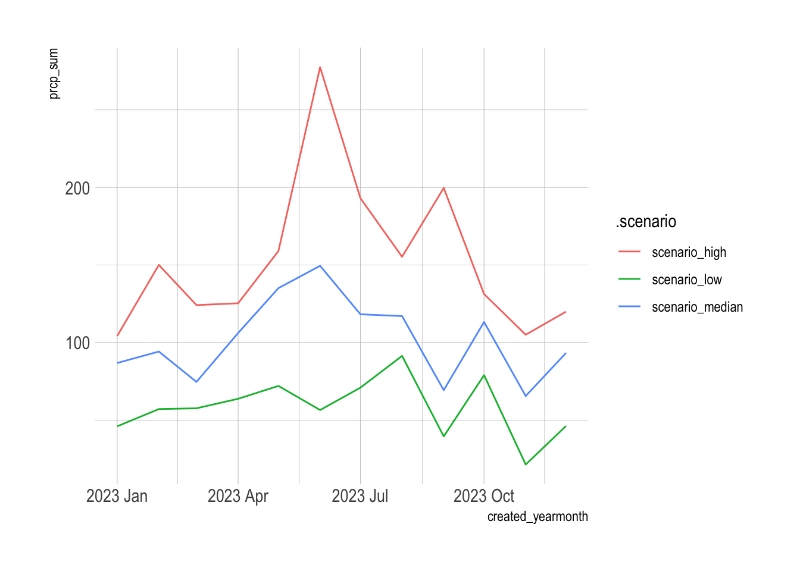
Finally, I refit the model against the entire history and forecast against each scenario.
#refit best model on total history
final_exo_model <- pothole_df |>
model(arima_exo_custom = ARIMA(log(report_count + 1) ~ temp_avg_lag3 + temp_diff + temp_min_avg_lag3 + temp_max_avg_lag1 + prcp_sum))
report(final_exo_model)Series: report_count
Model: LM w/ ARIMA(0,1,1) errors
Transformation: log(report_count + 1)
Coefficients:
ma1 temp_avg_lag3 temp_diff temp_min_avg_lag3 temp_max_avg_lag1
-0.6696 0.1409 0.1378 -0.1879 -0.0131
s.e. 0.0895 0.0716 0.0378 0.0718 0.0072
prcp_sum
0.0025
s.e. 0.0009
sigma^2 estimated as 0.2233: log likelihood=-58.77
AIC=131.5 AICc=132.9 BIC=149.2#forecast scenarios
scenerio_fc <- final_exo_model |>
forecast(fc_scenarios) |>
mutate(.scenario = fct_relevel(.scenario, c("scenario_low", "scenario_median", "scenario_high")))
scenerio_fc |>
mutate(.scenario = fct_rev(.scenario)) |>
autoplot() +
facet_wrap(vars(.scenario), scales = "fixed", ncol = 1)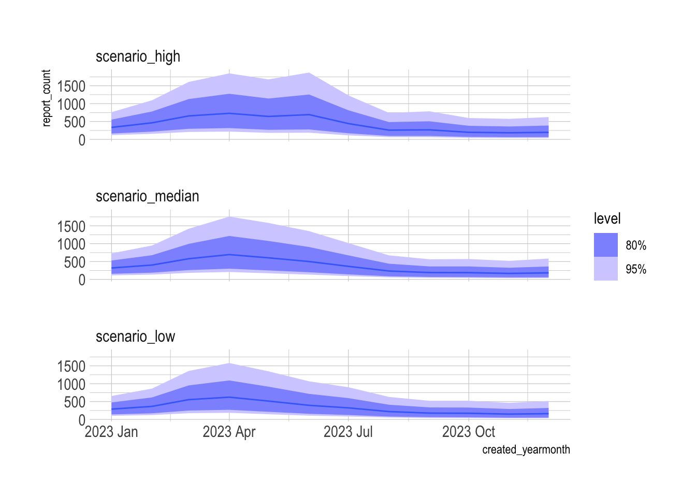
The model predicts that the scenario with more precipitation will have ~1,000 more pothole reports in the next 12 months than the scenario with less precipitation.
scenerio_fc |>
as_tibble() |>
group_by(.scenario) |>
summarize(total_pothole_fc = sum(.mean)) |>
ggplot(aes(total_pothole_fc, .scenario)) +
geom_col() +
scale_x_comma()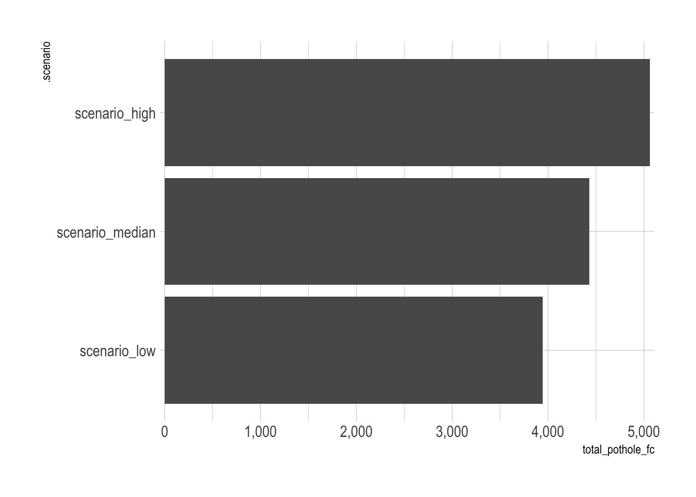
sessionInfo()R version 4.4.1 (2024-06-14)
Platform: x86_64-apple-darwin20
Running under: macOS 15.1.1
Matrix products: default
BLAS: /Library/Frameworks/R.framework/Versions/4.4-x86_64/Resources/lib/libRblas.0.dylib
LAPACK: /Library/Frameworks/R.framework/Versions/4.4-x86_64/Resources/lib/libRlapack.dylib; LAPACK version 3.12.0
locale:
[1] en_US.UTF-8/en_US.UTF-8/en_US.UTF-8/C/en_US.UTF-8/en_US.UTF-8
time zone: America/New_York
tzcode source: internal
attached base packages:
[1] stats graphics grDevices datasets utils methods base
other attached packages:
[1] tictoc_1.2.1 GSODR_4.1.3 hrbrthemes_0.8.7 future_1.34.0
[5] janitor_2.2.0 forcats_1.0.0 stringr_1.5.1 purrr_1.0.2
[9] readr_2.1.5 tidyverse_2.0.0 fable_0.4.1 feasts_0.4.1
[13] fabletools_0.5.0 tsibbledata_0.4.1 tsibble_1.1.5 ggplot2_3.5.1
[17] lubridate_1.9.3 tidyr_1.3.1 dplyr_1.1.4 tibble_3.2.1
[21] fpp3_1.0.1
loaded via a namespace (and not attached):
[1] tidyselect_1.2.1 farver_2.1.2 fastmap_1.2.0
[4] fontquiver_0.2.1 digest_0.6.37 timechange_0.3.0
[7] lifecycle_1.0.4 ellipsis_0.3.2 magrittr_2.0.3
[10] compiler_4.4.1 rlang_1.1.4 tools_4.4.1
[13] utf8_1.2.4 yaml_2.3.10 data.table_1.16.0
[16] knitr_1.48 labeling_0.4.3 htmlwidgets_1.6.4
[19] bit_4.0.5 numDeriv_2016.8-1.1 withr_3.0.1
[22] grid_4.4.1 fansi_1.0.6 gdtools_0.4.0
[25] colorspace_2.1-1 progressr_0.14.0 extrafontdb_1.0
[28] globals_0.16.3 scales_1.3.0 cli_3.6.3
[31] anytime_0.3.9 rmarkdown_2.28 crayon_1.5.3
[34] generics_0.1.3 future.apply_1.11.2 rstudioapi_0.16.0
[37] tzdb_0.4.0 splines_4.4.1 parallel_4.4.1
[40] vctrs_0.6.5 Matrix_1.7-0 jsonlite_1.8.8
[43] fontBitstreamVera_0.1.1 hms_1.1.3 ggrepel_0.9.6
[46] bit64_4.0.5 listenv_0.9.1 systemfonts_1.1.0
[49] ggdist_3.3.2 glue_1.8.0 parallelly_1.38.0
[52] codetools_0.2-20 distributional_0.5.0 stringi_1.8.4
[55] gtable_0.3.5 extrafont_0.19 munsell_0.5.1
[58] pillar_1.9.0 rappdirs_0.3.3 htmltools_0.5.8.1
[61] R6_2.5.1 vroom_1.6.5 evaluate_0.24.0
[64] lattice_0.22-6 snakecase_0.11.1 renv_1.0.11
[67] fontLiberation_0.1.0 Rcpp_1.0.13 nlme_3.1-164
[70] Rttf2pt1_1.3.12 mgcv_1.9-1 xfun_0.49
[73] pkgconfig_2.0.3